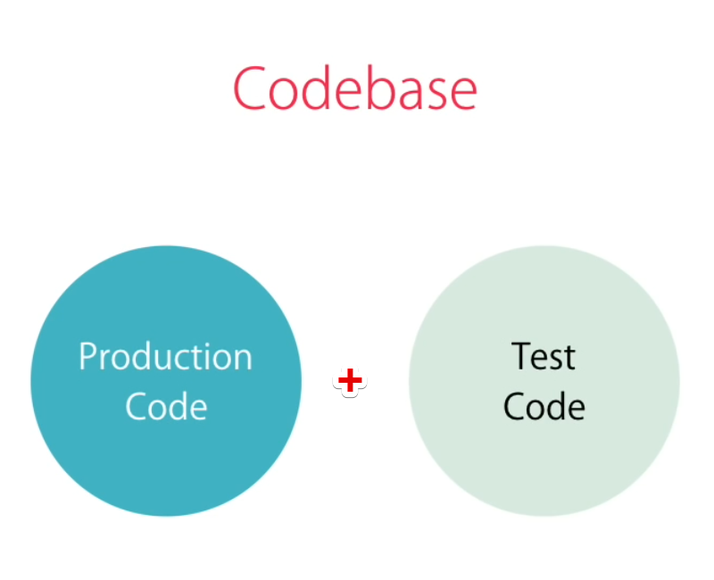
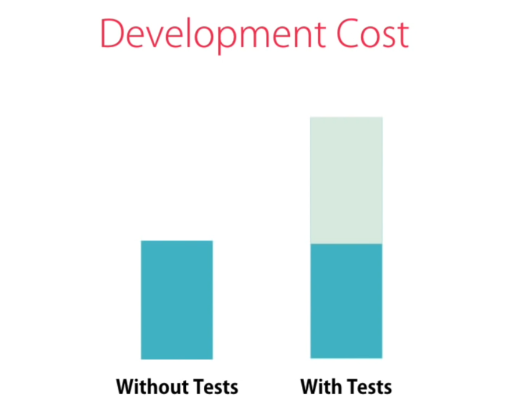
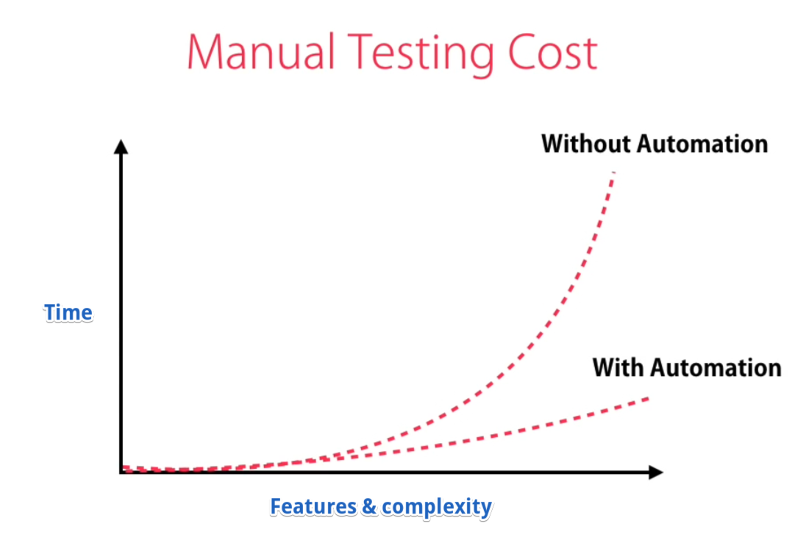

1. Introduction to Automated Testing
1.1. Common questions in mind of developers
- What is automated testing?
- Is it a replacement for manual testing?
- Do I need Automated testing?
- Do I write Test first (TDD - Test Driven Development) or application code first?
- What to test?
1.2. Developers thoughts
Testing our code is an important and integral part of any project but the majority of developer/technical professionals doesn't follow it, because:
- Testing looks complex
- It's time-consuming
- Developers are not clear about Testing
- Don't know how to work with Testing
- No clear idea/picture what to test
1.3. What is automated testing?
Automated testing
- Testing is the process of checking the code/functionality manually or in an automated fashion
- Automated testing is process/practice of writing code to test our code, then run tests in an automated fashion
- Automated testing is performed by writing test cases/scripts
- Manual Testing is performed by a human carefully executing the test steps
- Automation Testing means using an automation tool to execute your test case suite
1.4. Is it a replacement for manual testing?
1.4. Development and Testing Life cycle
Both Manual Testing & Automated Testing have their advantages and disadvantages:
- For smaller applications, Manual Testing is beneficial at the same time
- Large enterprise applications Automated Testing plays an important role
- Some project/software application (in which requirements changes frequently, R & D Projects) Manual Testing is the best option
- Also in some project/software application combination of both Manual Testing & Automated Testing works and fit fine (complex things checked manually and dynamic things can be automated tested)
Manual Testing Process Life cycle
- Code - We Develop some code/features
- Results - We have some expected results in mind
- Test - We Test/check application
- If all looks good/works fine - success confirmation - develop other next piece code/feature
- If any error/not happy with code - Failure - Modify/Fix and test again
Automated Testing Process Life cycle
- Code - We Develop some code/features
- Results - We have some expected results in mind
- Test - We can Automate and Simply Tests
- We can test some part manually
- At the same time write test cases/automate some task to avoid manual and time-consuming interaction
Automate testing helps to get breaking changes/last-minute code shocking changes at the initial level itself. Whenever we develop any application we need to test it. Sometimes the test is performed manually by developer/QA team member or at a time we prefer writing an Automated Unit Test.
Test-Driven Development is a single powerful tool to prevent bugs, defects from within our application. By putting some efforts on Testing we get better quality software with fewer bugs which is more maintainable in the long term.
Manual testing process/steps
- Launch application in the browser
- Login to application
- Go to the target page
- Follow proper steps and do some clicks here there to test & check, code or functionality developed
- Test/check positive and negative both scenarios for particular functionality/function
All the way manual testing is pretty time-consuming, to follow all the steps/cycle discussed above, we may need a couple of minutes.
Manual Testing of all workflows, all fields, all negative scenarios is time and money consuming. It is difficult to test for multi-lingual sites manually. Manual Testing can become boring and hence error-prone.
Automated testing process/steps
- We can write code, directly call the function with different positive and negative input values, and test functionality/function in a fraction of the moment.
- Automation increases the speed of test execution
- Automation helps increase Test Coverage
- Automation does not require human intervention. You can run automated test unattended (overnight)
1.5. Codebase to develop
With Automated testing, we have to write Production Code as well as Unit Test Code, so it takes significantly more time as compared to normal development time.
Codebase to develop

Image - Codebase to develop (Production + Test Code)
Production/Development Cost
It's fact that implementing the feature with unit test/testing will take more time than development without unit test/testing.
Production development cost

Image - Production development cost
Manual Testing Cost VS Automated Testing Cost
Manual Testing Cost
- In any application at the initial development level, Manual Testing takes less time
- As the application grows with more and more features, functionality and complexity, time is taken by Manual Testing increases exponentially-significantly
- In the longer run, many new team members are not aware of exact functionality and requirements to test as an actual old developer who developed the features are no more working with the company
Automated Testing Cost
- At the initial development level, Automated Testing takes more time
- In longer time over the years as and when the application grows with features and complexity, Automated Testing time decreases and it is far lesser than Manual Testing
- Nowadays many companies avoid manual testing and automate everything and prefer test automation

1.6. Why Test
- Testing is important and done to:
- Get an error if code break
- Avoid last-minute shocking/breaking code changes
- Tests are the best way to prevent software defects
- Avoid any invalid/bad/unwanted code
- Think about possible issues and bugs in code/application
- Integrate into build workflow (If all test cases succeed then merge code and deployed automatically)
- Save time in the longer run
- Break up complex code dependencies and make our code easier
- Improve code/better code quality
1.7. Benefits-Advantages of Automated Testing
- It helps to catch defects/bugs before releasing your application/product/software
- With Automated Testing, we produce software with fewer bugs and of better quality and more reliable
- Tests prevent software defects
- It will help you become a better developer
- It will enforce you to write better and more reliable code
- Helps in regression testing (Testing complete application in chunks, make sure old functionalities are working fine)
- Reveals mistakes in Design/Development (If some features are difficult/complex to write test cases - simplify functionality and logic)
- In the longer run, Automated Unit Testing acts as documentation fo application functionality
1.8. Do I need Automated testing?
1.8. Real-time testing scenarios
1.8. What world think about testing
Be Linguistics and Pragmatic:
- Automated testing has lots of advantages-benefits but it is not good-fit for each project and every team
- Needed disciplined code and programmer in team else we need to spend more time and money to fix broken code which may result in loss
- In the Real world, we have constrained for TIME and MONEY - our job is to build + deliver real working software by solving problems and deliver values to the world
- Depends on the Project Budget, Development Time and Resources we can decide to go for Automated Testing or not
- Automated Testing may not good for:
- A startup who have limited budget and time
- Startup companies who are not sure about product future
- Companies who develop research-based/experimental products (R & D projects)
- Software/application in which requirements changes frequently
1.9. First code or write the test TDD BDD
1.9. Do I write Test first (TDD - Test Driven Development) or application code first?
TDD (Test Driven Development)
- Sometimes, we write tests before we even start developing which is called TDD (Tests are written before the code)
- We mostly follow BDD (Behavior Driven Development) since we are using the Jasmine framework
Behavior Driven Development
- Behavior Driven testing is an extension of TDD
- Like TDD in BDD also we can write tests first and then add application code, The major difference that we get to see here are:
- Tests are written in plain descriptive English type grammar
- Tests are explained as a behavior of an application and are more user-focused
- Using examples to clarify requirements
It's all depends on TIME, MONEY and need/requirements - usually, developers and companies first prefer to do application development then go for testing i.e. BDD (Behavior Driven Development).
1.10. What to test
1.10. Which Test Cases to Automate?
Test cases to be automated can be selected using the following criterion to increase the automation ROI:
- High Risk - Business Critical test cases
- Test cases that are repeatedly executed
- Test Cases that are very tedious or difficult to perform manually
- Time-consuming test Cases
We can write Angular tests cases for testing Functions, Logics, Events, multiple types of Components, Attributes-Directives, Dependencies, Routers- Navigation, and services.
While writing test we must think/test all execution scenarios like if and else condition, positive, negative outputs, pass and fail cases, true or false switch case etc.
The following category of test cases are not suitable for automation:
- Test Cases that are newly designed and not executed manually at least once
- Test Cases for which the requirements are frequently changing
- Test cases which are executed on an ad-hoc (emergency or when needed) basis